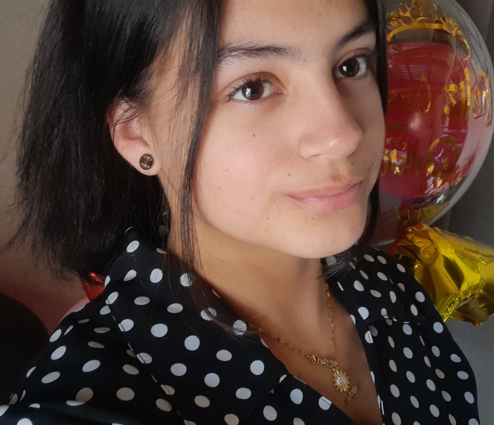

Nombre: Anyi Daniela Giron Castejón
Correo electrónico:
girondaniela789@gmail.com
Número de Teléfono: +504 94728995
BIOGRAFÍA
Fecha de Nacimiento: 20/01/2008
Lugar de Nacimiento: Tegiucigalpa Distrito Central.
Padres: Maria Argentina Castejón Mejia, Edwin Misael giron Ramos.
Hermanos: Kimberly Paola Fortin Castejón, Yeferzon Misael Giron Castejón.
FORMACIÓN ACADEMICA.
Instituto Técnico Francisco Miranda (2024-2025)
Iher San Francisco (2023)
Isabel de los Luchadores (2020-2022)
Escuela Rural Mixta Manuel Bonilla (2014-2019)
Rina Hernández Castro (2013)
CONOCIMEINTOS Y HABILIDADES.
-Trabajo en equipo.
-Adaptabilidad.
-Resolución de problemas.
-Comunicación Efectiva.
-Diseño 3D.
-Ofimática (Microsoft Office).
-Diseño Web.